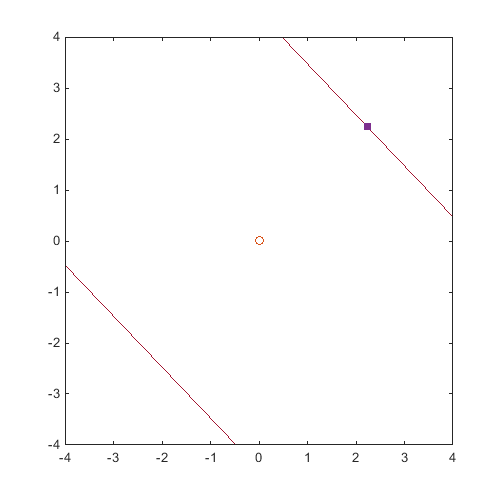

Examples / Reliability assessment / subset
This file is a complete demo of the capability of the subset function from the CODES toolbox.
Contents
Documentation
The documentation for the subset function can be found here.
Set rng
Set random number generator seed:
rng(0)
Complex example
Compare FORM, SORM, Subset and MC
g=@(x)-(x(:,1)+x(:,2)).^2+20; res_form=CODES.reliability.form(g,2,'solver','hl-rf'); res_sorm=CODES.reliability.sorm(g,2,'res_form',res_form); res_subset=CODES.reliability.subset(g,2,'vectorial',true); res_mc=CODES.reliability.mc(g,2,'vectorial',true); CODES.common.disp_matrix(... [res_form.beta res_sorm.beta res_subset.beta res_mc.beta;... res_form.Pf res_sorm.Pf res_subset.Pf res_mc.Pf;... res_form.LS_count res_sorm.LS_count res_subset.LS_count res_mc.LS_count],... {'Beta','Pf','# funct. calls'},{'FORM','SORM','SubSim','MC'})
FORM SORM SubSim MC
Beta 3.16228 3.05994 2.95188 2.9492
Pf 0.000782701 0.00110692 0.00157922 0.001593
# funct. calls 73 9 268024 1e+06
Compute and compare sample coefficient of variation of SubSim and MC
for i=1:200 res_subset(i)=CODES.reliability.subset(g,2,'vectorial',true); res_mc(i)=CODES.reliability.mc(g,2,'vectorial',true); end CODES.common.disp_matrix(... [mean(cell2mat({res_subset.LS_count})) mean(cell2mat({res_mc.LS_count}));... mean(cell2mat({res_subset.beta})) mean(cell2mat({res_mc.beta}));... mean(cell2mat({res_subset.Pf})) mean(cell2mat({res_mc.Pf}));... 100*std(cell2mat({res_subset.beta}))/mean(cell2mat({res_subset.beta})) 100*std(cell2mat({res_mc.beta}))/mean(cell2mat({res_mc.beta}));... 100*std(cell2mat({res_subset.Pf}))/mean(cell2mat({res_subset.Pf})) 100*std(cell2mat({res_mc.Pf}))/mean(cell2mat({res_mc.Pf}))],... {'# funct. calls','E[Beta]','E[Pf]','cv Beta','cv Pf'},{'SubSim','MC'})
SubSim MC
# funct. calls 268088 1e+06
E[Beta] 2.95462 2.95534
E[Pf] 0.00156577 0.0015622
cv Beta 0.280376 0.295351
cv Pf 2.67647 2.82895
Plot the limit state
figure('Position',[200 200 500 500]) [X,Y]=meshgrid(linspace(-4,4,100)); Z=reshape(g([X(:) Y(:)]),size(X)); Colors=get(gca,'ColorOrder'); contour(X,Y,Z,[0 0],'Color',Colors(end,:)) hold on plot(res_form.MPP(1),res_form.MPP(2),'s','MarkerFaceColor',Colors(4,:),'MarkerEdgeColor',Colors(4,:)) plot(0,0,'o')
Change the target distribution
In this example, consider same limit state function but we modify the marginal PDFs. For example, if the two random variables follow gaussian distribution with respective means 1 and 0 and respective standard deviation 1 and 0.5:
pdfs_target=@(x)normpdf(x,repmat([1 0],size(x,1),1),repmat([1 0.5],size(x,1),1)); sampler=@(N)normrnd(repmat([1 0],N,1),repmat([1 0.5],N,1)); res_subsim=CODES.reliability.subset(g,2,'vectorial',true,'PDFs_target',pdfs_target,'sampler',sampler); disp(res_subsim);
Pf: 9.2893e-04
beta: 3.1121
steps: 4
LS_count: 341035
Compute sensitivities dPfdtheta
Here are two examples on how to compute sensitivities of the estimated probability of failure. See subset help for details on the options.
Using a simple standard gaussian space and a linear limit state:
d=3; g=@(x)-x(:,2)-x(:,1)+d; beta=@(mus)(d-sum(mus))/sqrt(2); dbetadtheta=-1/sqrt(2)*ones(1,2); dPdfdtheta=@(mus)-dbetadtheta*normpdf(-beta(mus)); lnPDF=@(x,mus)sum(log(normpdf(x,mus,[1 1])),2); dlnPDF=@(x,mus)bsxfun(@minus,x,repmat(mus,size(x,1),1)); tic; res_subset=CODES.reliability.subset(g,2,'vectorial',true,'lnPDF',lnPDF,'theta',[0 0]); time_ln=toc; tic; res_subset1=CODES.reliability.subset(g,2,'vectorial',true,'dlnPDF',@(x)dlnPDF(x,[0 0])); time_dln=toc; CODES.common.disp_matrix([res_subset.dPfdtheta res_subset.dbetadtheta time_ln;... res_subset1.dPfdtheta res_subset1.dbetadtheta time_dln; dPdfdtheta([0 0]) dbetadtheta 0],{'ln','dln','ref'},... {'dPfdtheta1','dPfdtheta2','dbetadtheta1','dbetadtheta2','time'});
dPfdtheta1 dPfdtheta2 dbetadtheta1 dbetadtheta2 time ln 0.0296094 0.0298026 -0.70314 -0.707728 22.1964 dln 0.0299514 0.0297982 -0.709238 -0.705612 0.0898568 ref 0.0297326 0.0297326 -0.707107 -0.707107 0
Compute sensitivities dPfdz
Using a simple standard gaussian space and a linear limit state:
d=4; z=[1 2]; gg=@(x)deal(-sum(z)-x+d,-ones(size(x,1),2)); g=@(x)-z-x+d; Pf=@(z)1-normcdf(d-sum(z)); beta=@(z)-norminv(Pf(z)); dPfdz=@(z)normpdf(d-sum(z)); dbetadz=@(z)-dPfdz(z)/normpdf(-beta(z)); res_subset=CODES.reliability.subset(gg,1,'vectorial',true,'nz',2,'frac',0.5,'dirac','gauss'); CODES.common.disp_matrix([res_subset.dPfdz res_subset.dbetadz;... dPfdz(z) dPfdz(z) dbetadz(z) dbetadz(z)],{'est','ref'},... {'dPfdz1','dPfdz2','dbetadz1','dbetadz2'});
dPfdz1 dPfdz2 dbetadz1 dbetadz2 est 0.237711 0.237711 -0.991311 -0.991311 ref 0.241971 0.241971 -1 -1
Copyright © 2015 Computational Optimal Design of Engineering Systems (CODES) Laboratory. University of Arizona.
|
|
Computational Optimal Design of Engineering Systems |

|